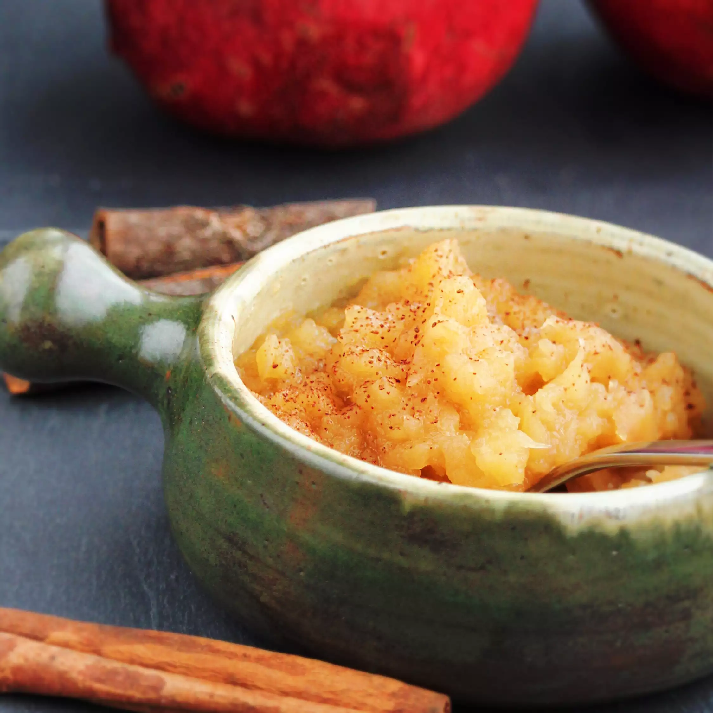

Easy Applesauce

Description
A simple applesuace using brown sugar and apple cider.
Ingredients
- 12 medium apples: peeled, cored and chopped.
- 1/3 cup light brown sugar.
- 1 1/2 tsp ground cinnamon.
- 1 1/2 tp lemon juice.
- 1 cup apple cider.
- 1 pinch salt or to taste.
Preparation
- Mix apples, brown sugar, cinnamon, lemon juice, apple cider and salt together
in a large pot over medium-high heat.
- Bring to a boil, then reduce heat to low and simmer for until apples are
soft, inabout 20 minutes.
- Use a potato smasher while cooking to help break down the applles.
- Serve warm or cool.